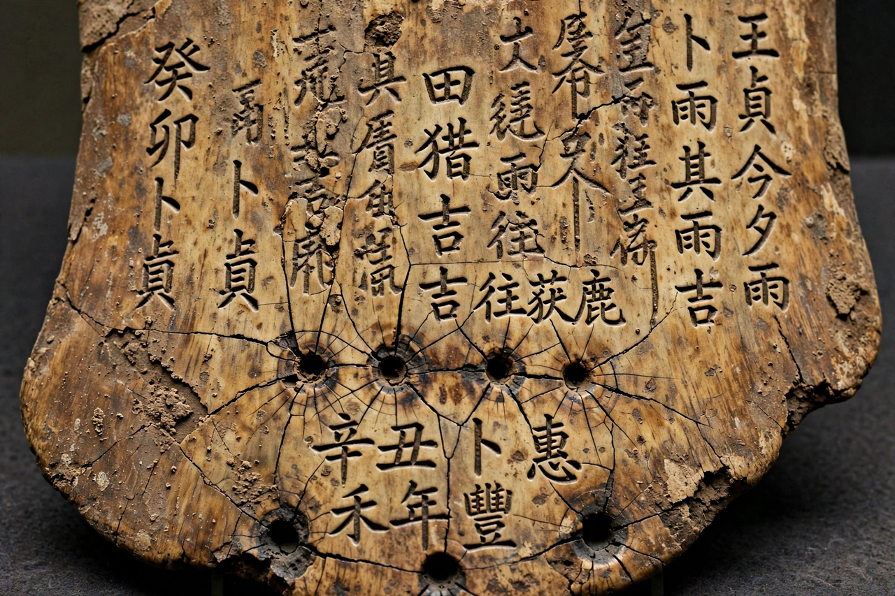

Oracle bone script

Period: c. 1250 – 1050 BCE (late Shang dynasty)
Medium: ox scapulae and turtle plastrons
Deciphered characters: roughly 1,300–1,500 of c. 4,500 known graphs
Oracle bone script is the earliest known form of Chinese writing, used during the late Shang dynasty (c. 1250–1050 BCE) for pyromantic divination. Characters were incised into ox shoulder blades and turtle plastrons, which were heated until they cracked; the cracks were interpreted as answers from royal ancestors and the high god Di, and the questions, and sometimes the outcomes, were recorded on the bone.
Discovery
Oracle bones were recognised as ancient writing in 1899 by Wang Yirong, who noticed characters on "dragon bones" sold as medicine. Their source was traced to Xiaotun village near Anyang, the last Shang capital (Yinxu), where Academia Sinica excavations from 1928 recovered tens of thousands of inscribed pieces. Over 150,000 fragments are now known.
Content and significance
The inscriptions are the earliest substantial body of Chinese text. They record divinations about warfare, harvests, weather, childbirth, illness, hunting and royal rituals, and preserve the names and sequence of Shang kings, confirming the broad accuracy of the king lists in Sima Qian's Records of the Grand Historian written a millennium later. Diviner names and reign periods allow the bones to be grouped chronologically, most dating to the reign of Wu Ding (c. 1250–1192 BCE).
The script
Though pictorial in flavour, the script was already a mature writing system with phonetic loans and semantic-phonetic compounds — the structural principles still used in Chinese characters today. It evolved through bronze inscriptions and seal script toward the modern character set. About a third of the roughly 4,500 distinct graphs have been deciphered.
See also: History of China · Shang dynasty